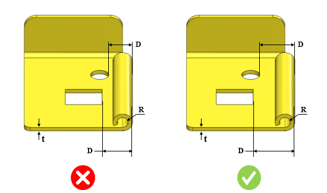

カールとカットアウト間の最小距離は、推奨値に従う必要があります。
カールからカットアウトまでの距離が最小値を下回る場合、検討対象領域において板材の変形や割れが発生する可能性があります。
カールとカットアウト間の最小距離（D）は、板厚の3倍に内側半径（R）を加えた値以上である必要があります。
DFMProはカールの内側半径を識別し、この半径と板厚の3倍を加算して、カールとカットアウト間の距離を算出します。
ユーザーは、デフォルトで構成されている値を編集することができます。
スロットや穴などのカットアウトが、このルールの対象として考慮されます。

ここでは、
t = 板厚
R = 内側半径
D = カールとカットアウト間の最小距離
注記：
面取り付きのカットアウトもサポートされています。